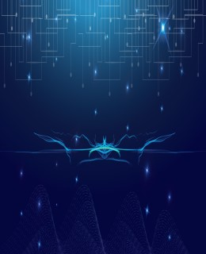
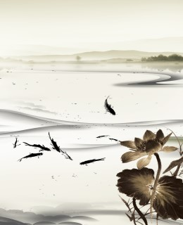
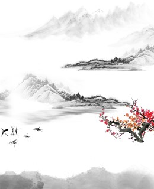
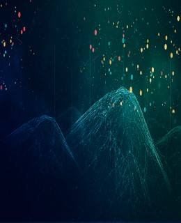
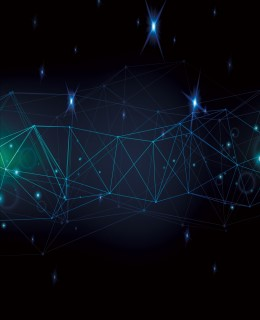
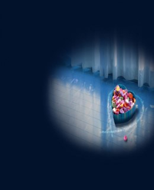
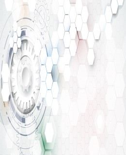
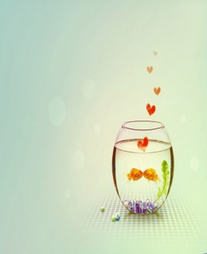

这是仅三个月来热销产品
街道
第一缕晨光
一条小路从凌晨走向黄昏 从青春浪漫接近了牵手的远荒 还是这段情让你今生难忘 还是这首歌在我们拥抱时抒唱 梦幻的旋律绕不过岁月的林 也绕不过那星河对你的眷念 爱情 就是每一时都不能平静的心跳

星空
星空下的剧场
一颗闪亮的星星，能带来多少明亮，是一米，两米，还多少米……不管如 何的明亮，它永远都不可能照亮整片大地。风儿，轻轻的滑过那微微红润 的脸颊，在盛夏带来一丝微凉。夜下的繁星急剧的变幻，清光皎皎，天空中 细微的变化都呈现在仰望者的眼里。是美是坏不是我一人说的算，都凭借着 观赏者们的眼。话语的掉落，星空的黯淡，一幕幕哭剧在星空的见证下出演着。

山水墨花
静画
山水画静静地挂在黯淡的墙壁上，黑白线条分明。 昏黄的灯光就着窗外淡淡的月光，交织成一片混浊的世界。 没有风，夏夜很闷热。蝉声还未到来。与一幅画对峙， 夜深人静，我和它靠得很近，近到可以触摸故乡的温情。

鸟
飞鸟
低头的时候，翅膀已高过砖瓦。我的眼睛却还在田野游离，或是森林。而现在，我正自由飞翔。 白云是天空赐予我的衣裳，大地是我美丽的绿床。而每一条河流，我们都相互歌唱。我飞的不必那么匆忙， 当你看到我的时候。我只是一只自由的飞鸟，在一开始的天亮。请你别怀疑自己，我们共同拥有的， 都是美妙的时光。不管是往昔还是今日，不管是天空还是深井，只需要心灵的安详。

极地光景
极光
北极，一个神秘的地方。一半是白昼，一半是黑夜漫长。 北极，离天最近的地方，近得，可以看到星星的微笑， 近得，可以聆听流星的歌唱。北极，极光闪耀的地方， 那是来自天堂的光，在夜幕上炫耀，光的影像。 北极，人类最后的净土，有爱斯基摩人守卫着，让一切胆敢污染的人， 获得极地海豹的下场。静悄悄的，冰雪映着美丽的极光。在极光的背后， 是通往天堂的窗。

科学射线
趣事
伦琴在研究阴极射线时，把一张黑色的硬纸板包裹在克鲁克斯管 （一种抽去了一些空气的玻璃放电管）的外面。下班回家的路上， 他忽然想起了自己忘了切断电路，那个跟克鲁克斯管连接的感应圈一 直在工作。于是，他返回实验室，他没有开灯，想摸到桌边去关掉电路。 他突然发现在黑暗的实验室里不超过一米远的小桌上有东西在闪烁着不太 明亮的冷光。
深海光点
直入海底
想潜入深海。万里幽深明明暗暗，用深幽的蓝色将自己掩埋。 看似厚重的深度背后是刺骨的凉薄和单调，人生的背后是否亦如 这样虚无？深海尽头还是深蓝；正如迷惘背后还是迷惘，孤独尽 头还是孤独。每一日的向前成为了与昨日自己的拉锯。而且往往战败。 外界的一切都粘稠而模糊以至于遥远。不想触碰。无奈和愤懑被无限拉长， 犹如被抽出的纤长玻璃丝，绵密火热后定型、冷塑，坚不可摧，炽灼着每一个 身陷于此的渺小人间飞蝇。
夏日海边
美不胜收
这里的天真蓝！蓝的让人欣喜若狂！她一尘不染，难道是 被清澈的海水漂洗过吗？也只有被海水漂洗过才会有这样蓝的 让人心醉吧！淡淡的蓝，真的好让人心旷神怡，神清气爽！几缕棉 花糖一样的白云懒洋洋的飘在空中，连毛绒绒的云边缘都几乎清晰 可辨！往日波涛汹涌的大海，今天似乎特别平静， 在阳光的照射下，好像穿上了一件金色的衣裳。海面上停着一艘轮船，还有 几只快艇从海面上飞驰而过，激起几道雪白的浪花。

美味糖果
孩子最爱
我喜欢糖果的味道，甜甜的，香香的，还有它的颜色很好看， 很可爱，每当我吃上一块，那是一种回忆校园的味道。好想自 己拥有一个魔法宝盒，带我穿越时空又回到青涩的校园时代， 那时的我们是多么的青春，是多么的天真，是那样的阳光， 还是会让我着迷，他穿着那件白色的休闲衣服，看着是那样的干 练，他，我，手牵着手，漫步。可从甜美的梦中醒来只是一场梦 而已。我真想让它继续。

机械齿轮
时间如齿轮
不要在意生活当中那些附加的恶意。不顺、失落、曲解、 谩骂、流言，只需看过便好。要学会取舍，要尝试脱离， 在走过荆棘之后的坦途上，再回头望去，一切都不过如此。 这便是生命的一个奇妙的点，它让一切轰轰烈烈的事情， 在许久之后，都不值得一提。离去的，都是风景，留下的， 才是人生，时间的齿轮在不停的转动，但愿你的心可以停留在初衷， 活成自己心中想要的样子

金鱼透璃
最美瞬间
金鱼是水世界里最美丽的舞娘。它们有的俏皮，有的文静。 金鱼吃起东西来可有趣啦！只要我撒下鱼虫粉，它们就拼命地甩动尾巴， 摇动胸鳍，一个劲儿地向事物游去。然后张开圆溜溜的大嘴巴， 争先恐后地抢了起来。等吃饱了，它们就沉下水底静静地休息了。 休息片刻，金鱼又像往常一样，精神饱满地互相穿梭来往。 腮一张一合的，吐着露珠似的泡泡，好像在窃窃私语，又像在喋喋不休。 这只鱼缸就像它们温馨的家，它们忽上忽下，忽左忽右，自由地生活。
地球的底部，飞跃整整半个地球，去看可爱的企鹅海豹鲸鱼，去看看什么叫做冰川冰盖，什么叫做南极。 记得世界末日2012.12.21左右，周边弥漫着抑或是颓废，或是放纵的各种情绪，如果有世界末日， 你会在最后的一个月做什么？也许很多人都要在这一刻才来实现自己的愿望。而对于我来说， 人生应该是每一刻终止，都不会懊悔的状态。因为，你永远不会知道什么时候生命会终结。 我就是带着这样极端悲观的概念积极的活着。所以我在众人惊叹“你很多钱”的感慨中花光了积蓄， 预订了南极的整个行程。如果你有十万，你会干什么？买一辆车？存银行？还是看完这篇游记， 也想去看看这个世界呢？
在纽约，在业余时间里我的主要去处就是这些博物馆、艺术馆，这些世界上顶尖的文物、艺术品总让我流连忘返。 除了博物馆以外，纽约的周边风景也非常秀美，阳光、沙滩、公园等等也非常多，如果你喜欢户外、徒步、野餐，那么在假期纽约可以满足你的所有活动需求。